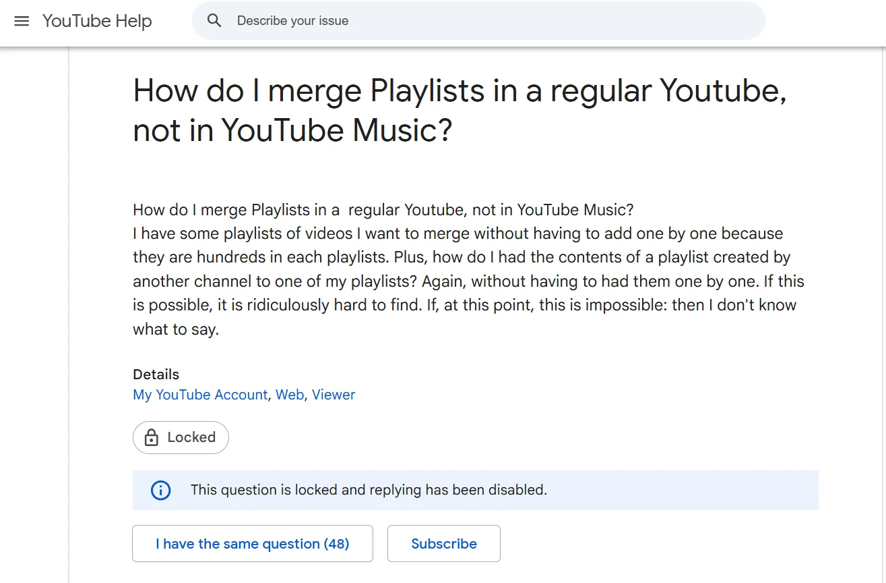
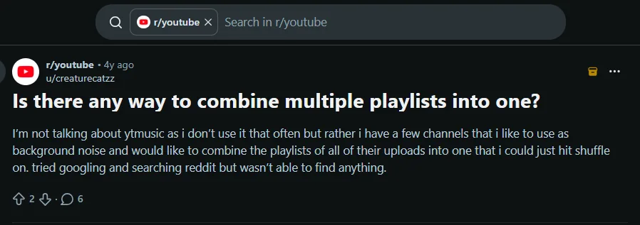
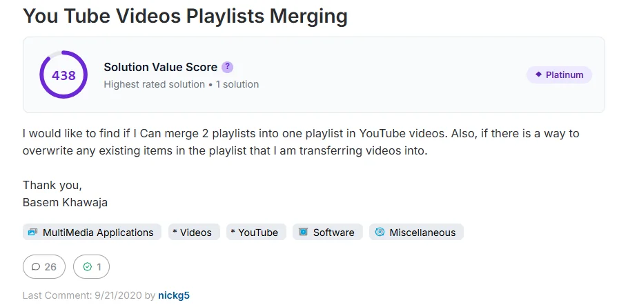

The problem to understand
Saved across playlists is not the same as easy to assemble.
People who save videos across several playlists may face repetitive work when they want to assemble a focused collection for a project, topic or activity.
Product concept · Proposed workflow, not a shipped YouTube feature. Demand, API permissions and operational feasibility require validation.
Select videos from chosen playlists, review the order and create one destination playlist—without changing the originals.
People who save videos across several playlists may have to repeat manual steps to assemble a focused collection. The opportunity is to test whether a safe bulk workflow would reduce that effort.
People who save videos across several playlists may face repetitive work when they want to assemble a focused collection for a project, topic or activity.
Let people choose source playlists, select the videos they want, review the destination and create one ordered playlist—without changing the originals.
People who manage large YouTube libraries describe combining playlists and adding many videos as repetitive work. The opportunity is to make that process more efficient while keeping source playlists intact.
| Problem element | Current position | Confidence |
|---|---|---|
| Audience | People with large or cross-source video libraries; segment still to validate. | Low |
| Trigger | Selecting videos from several source playlists to create one destination playlist. | Directional |
| Current friction | Manual item-by-item work and uncertainty about destination behaviour are reported in public discussions. | Qualitative |
| Impact | Time, effort and abandonment have not yet been measured. | Unknown |
| Solution fit | A dedicated organizer may help, but simpler workflows or platform-native changes may be preferable. | Unknown |
If users who frequently consolidate large playlists can select videos across sources, review the destination and apply a supported bulk operation safely, they will complete consolidation with less effort than the current workflow.
Primary falsification question: after observing the current workflow, is the pain frequent and costly enough to justify a dedicated experience—and can the most valuable workflow be implemented within platform constraints?
| Metric | Definition | Baseline / target |
|---|---|---|
| Adoption | Eligible exposed users completing at least one organization action within 30 days. | Baseline first |
| Task efficiency | Change in median time to complete a defined organization task versus the manual baseline. | Baseline first |
| Operation success | Share of eligible selected items processed successfully. | Baseline first |
| Search effectiveness | Share of search sessions resulting in the intended video or playlist being opened. | Baseline first |
| Accidental actions | Unintended changes, reversals and user-reported mistakes. | Minimize |
| Reliability | Accuracy of success, failure and partial-completion reporting. | No hidden failures |
Measurement plan: establish task-based usability baselines before numerical targets are committed. Define eligible users, task boundaries and event instrumentation before launch.
Three user screenshots highlight requests for playlist merging, cross-channel consolidation and clearer destination-playlist behaviour. These signals shape the initial discovery questions.
The poster asks about merging playlists in regular YouTube and transferring videos from a playlist created by another channel.

The poster wants one playlist that can be shuffled for background listening or viewing.

The poster asks whether playlist contents can be merged and whether existing destination items can be overwritten.

| Supported signal | Not yet established |
|---|---|
| Some users explicitly ask about bulk consolidation. | How common or severe the problem is across the eligible audience. |
| At least one use case combines videos from multiple channels. | Which workflow has the highest user value or should be prioritised first. |
| Users raise questions about destination contents and overwrite behavior. | Whether the proposed actions are supported by current YouTube APIs and permissions. |
The supplied reports point to a possible consolidation problem, but they do not establish its frequency, severity or demand. The next decision is whether this job is painful enough—and technically feasible enough—to justify a dedicated workflow.
If research confirms repeated, costly manual work, test a narrow flow: choose source playlists, select videos, review order and duplicates, then create one destination playlist. Do not add playlist grouping or library-wide search until separate evidence supports them.
| Candidate job | Evidence available | Potential value | Key uncertainty | Next decision |
|---|---|---|---|---|
| Consolidate videos across playlists | Directly described in supplied Help Community and Reddit screenshots. | May reduce repetitive bulk work. | Frequency, task burden, technical feasibility. | Validate first |
| Find saved videos across playlists | Part of the initial product brief; not directly demonstrated by these three screenshots. | May reduce retrieval time. | Whether current search is inadequate for target users. | Research |
| Group playlists into collections | Not part of the first-release hypothesis; not directly demonstrated by supplied evidence. | May improve high-level library navigation. | Whether users need a new grouping layer and how it can be implemented. | Research |
| Clean up duplicates / unavailable items | Inferred from maintenance goals, not validated by the supplied screenshots. | May reduce library clutter. | Problem severity, reliable detection and risk of false positives. | Defer |
During discovery, compare opportunities using the same criteria: frequency, severity, evidence strength, user value, feasibility and risk. Record the rationale and revisit priorities as new evidence emerges.
The first release is deliberately narrower: select videos from chosen source playlists, review the destination and create one ordered playlist. These are proposed interactions, not existing YouTube features. Playlist grouping and library-wide retrieval remain separate discovery questions.
Choose the playlists to work from, then search or filter their contents. Keep each result tied to its source playlist.
Check each video, its source, its order and any duplicate or unavailable status.
Create one ordered destination playlist from selected videos. Keep source playlists unchanged.
Confirm consequences, execute supported changes and report outcomes.
Choose source playlists first. Search or filter within those sources and keep the source context visible for every result.
Create one ordered destination playlist from selected videos. Treat playlist grouping as a separate future opportunity, not part of the first release.
Show item-level success, failure and retry status. Never report the whole operation as successful when only some items were created.
Before consequential actions, show selected items, destination, duplicate policy and any source-playlist effects. Report complete, failed and partial outcomes honestly.
The proposed flow moves from finding content to selecting it, reviewing the changes and confirming the result.
Illustrative screens showing the proposed user journey.
Priorities below are provisional. P0 denotes behavior needed to test a safe core workflow; P1 and P2 items depend on validation, feasibility and release scope.
The product must let a user choose accessible source playlists and find relevant videos within the selected sources.
Before a consequential operation, the product must show the selected items, destination and expected effect.
The product must report successful, failed and partially completed operations based on actual outcomes.
The product must make source and destination effects explicit and avoid unrequested changes to existing playlists.
If platform capabilities permit, users can select videos from multiple chosen source playlists for one destination playlist.
Bulk actions need clear rules before they are safe to use. The proposed defaults below cover common failure cases and must be checked against actual platform behaviour.
| Condition | Proposed default | Required user communication |
|---|---|---|
| Video already exists in destination | Do not silently duplicate or overwrite. Flag it and apply a clearly explained default—initially, skip duplicates unless the user chooses otherwise. | Show how many items are duplicates and what will be skipped. |
| Video unavailable or inaccessible | Skip it from execution unless the platform returns a valid actionable state; retain it in the report. | Identify the item and reason where the platform provides one. |
| Partial failure | Keep per-item results and do not label the whole operation as fully successful. | Report succeeded, failed and not-attempted counts with retry options where safe. |
| Retry after timeout | Reconcile the destination state before retrying to reduce accidental duplicate insertion. | Explain whether the operation status is known or still being verified. |
| Order cannot be applied | Preserve the intended order in the review state; do not claim that the destination matches it if the platform rejects ordering. | Explain the ordering limitation before execution. |
| Source playlist changes | Never remove items from source playlists as an implicit consequence of copying to a destination. | Any source deletion or alteration requires a separate explicit action. |
| Destination changes during operation | Recheck destination state before applying the operation where technically possible. | Ask the user to review again if the outcome could differ materially. |
The YouTube Data API supports listing, adding, updating and deleting playlist items. Implementation planning must account for authorization, playlist ownership, API quotas, special playlists, platform policies and grouping behaviour.
| Capability | Initial API signal | Product implication | Status |
|---|---|---|---|
| List playlist items | playlistItems reference ↗ | Likely foundation for reading items from accessible playlists; confirm authorization and visibility constraints. | Verify |
| Add video to destination | insert reference ↗ | API supports insertion, but each write has quota cost and may fail for unsupported or inaccessible items. | Verify |
| Reorder playlist item | update reference ↗ | Position updates exist; confirm destination sorting mode and exact ordering behavior. | Verify |
| Remove playlist item | delete reference ↗ | Removal is a destructive write; keep it out of the initial consolidation path. | Defer |
| Create or update playlist | playlists reference ↗ | Playlist resources are supported, but a custom “collection of playlists” is not established by these API methods. | Unproven |
Source note: official YouTube Data API references informed this initial feasibility check. Quotas, OAuth scopes, platform policies and current behaviour still need verification before implementation.
Interview target users about recent library tasks and current workarounds.
Observe task completion; measure time, effort, errors and frequency.
Confirm API, permission, privacy and platform constraints.
Test the smallest high-value workflow before expanding scope.